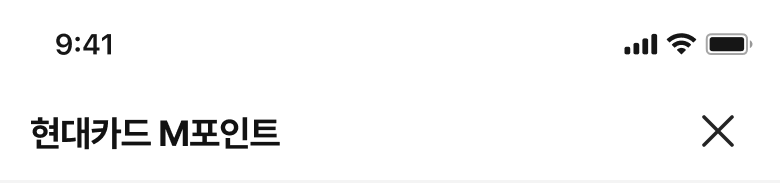

<div class="wrap_inner">
    <strong class="badge">통합결제</strong>

    <div class="device_wrap">
        <div>
            <p class="header"></p>
            <div class="cont">
                
            </div>
        </div>
        <p class="bottom"></p>
    </div>
    <div class="txt_wrap_s">
        <p>
            <strong>조회 전, 후의 정보를 한 화면에 노출하고</strong><br>
            <strong>화면을 구분</strong>하여 사용자에게 제공함으로서<br>
            <strong>빠르고 정확한 인지</strong>를 돕도록 합니다. 
        </p>
    </div>
</div>

<script>
    $(function(){
        setTimeout(()=>{
            $('.txt_wrap_s, .device_wrap').addClass('active');
        },500);


        $(".cont").on({
            "mouseover":function() {
                $(".cont, .bottom").css({"opacity":"0"})
                setTimeout(()=>{
                    $(".cont, .bottom").css({"opacity":"1"})
                    $(".cont > img").attr({"src":"./images/C/M/m_main_02.png"});
                    $(".bottom > img").attr({"src":"./images/C/M/m_footer_02.png"});
                },500)
            },
            "mouseout":function() {
                $(".cont, .bottom").css({"opacity":"0"})
                setTimeout(()=>{
                    $(".cont, .bottom").css({"opacity":"1"})
                    $(".cont > img").attr({"src":"./images/C/M/m_main_01.png"});
                    $(".bottom > img").attr({"src":"./images/C/M/m_footer_01.png"});
                },500)
            }
        });
    });

</script>

<style>
    
    /* .wrap_inner {align-items:start;} */
    .badge {position:absolute; top:0; left:0;}
    .txt_wrap_s {opacity:0; transition:all 0.5s;}
    .txt_wrap_s.active {opacity:1;}
    .txt_wrap_s p {opacity:0; transform:translateY(100px); transition: 1s 0.8s ease-out; }
    .txt_wrap_s.active p {opacity:1; transform:translateY(0);}
    /* .bottom::before {width:100%; background-color:rgba(0,0,0,0.7); opacity:0; content:''; position:absolute; top:0; left:0; right:0; bottom:0; z-index:1; display:block; transition:all 0.5s 1.5s;}
    .device_wrap.active > .bottom::before {opacity:1;} */

    .device_wrap {margin-left:280px;}
    .cont,.bottom {transition:1s;}


</style>
